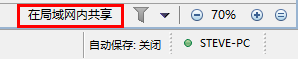
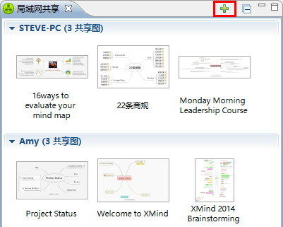
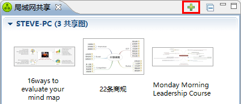
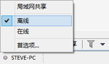
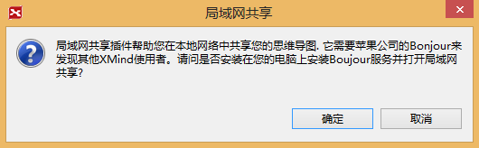

局域网共享是XMind团队精心打造的协作功能,提高团队的沟通效率和协作水平.一键分享,局域网内的其他的XMind用户即可在他们自己的XMind中打开这个文件. 操作便捷,同时还可以为分享的图附上一段介绍.如果有需要, 还可以发送信息给特定的某个人,请他查看这张图.
分享思维图
- 启动XMind最新版, 打开需要分享的思维图
- 现在有2种方法进入来分享,
- 从菜单选择 "文件 > 局域网内分享".
- 点击底部工具栏上的 "局域网内分享"的按钮.

- 此时,XMind会打开局域网共享视图.然后这张图会显示在里面.视图里面也会显示其他人分享的思维图.

您也可以在XMind中分享硬盘上的某个文件,无需打开.
- 启动XMind
- 从菜单选择 "视图 > 局域网共享",从而打开局域网共享视图.
- 点击视图工具栏上的 加号 按钮
 - 选择本地的文件,点击确定即可.
一旦您分享了某张图,您在这张图上的所有修改在点击保存之后都会立即分享出去. 其他用户只要从 局域网共享视图 中双击这张图即可查阅.当然您也可以使用同样的方式来
查看他人分享的思维图. 当您在 局域网共享 视图中双击某张图的时候,XMind会将这个思维图复制一份到您的电脑上, 并打开这个思维图.
非常简单,快捷!
发送信息
XMind 2013同时还带来了消息发送功能。目前，如果分享了一张图，您可以为这张图附上一段文字。可以是图的介绍，某个要求等。这个消息可以发给局域网内的全部用户或者 某一个。下面就是如何使用这个功能,
- 从菜单选择 "视图 > 局域网共享",从而打开局域网共享视图.
- 选中您分享的图，点击右键.
- 选择"为这些思维图发送信息..".
- 在信息对话框中，选择接收者并输入信息内容.
- 点击 确定 发送信息.
- 注意：
- 目前，您只可以为自己分享的图发送消息。
- 发送消息的时候只能选择局域网内的全部人都接收或者某个人接收。
在线、离线状态
一旦开启局域网共享，系统会默认您的状态是在线。这样，局域网内的其他人就可以分享思维图或者发送消息给您。如果不希望在使用XMind的时候被打扰，您可以将状态设置为离线。
方法很简单，点击底部工具栏上的状态按钮，在弹出的选项中选择“离线”即可。这样您就不会被局域网内其他人发给您的消息所打扰。
局域网分享首选项设置
在XMind的首选项设置中，局域网分享有单独的一页（ “编辑 -- 首选项 -- 局域网分享”）。在这里，您可以设置局域网中您的昵称，开启或关闭局域网分享服务。
Bonjour服务
XMind的局域网分享服务将会使用到美国苹果公司的Bonjour服务。因此，当XMind运行此功能的时候，会首先检查您的电脑是否安装有Bonjour。如果没有，XMind会询问您是否安装。 点击确认之后，XMind会帮您安装好苹果的Bonjour，然后您就可以使用局域网分享服务。
